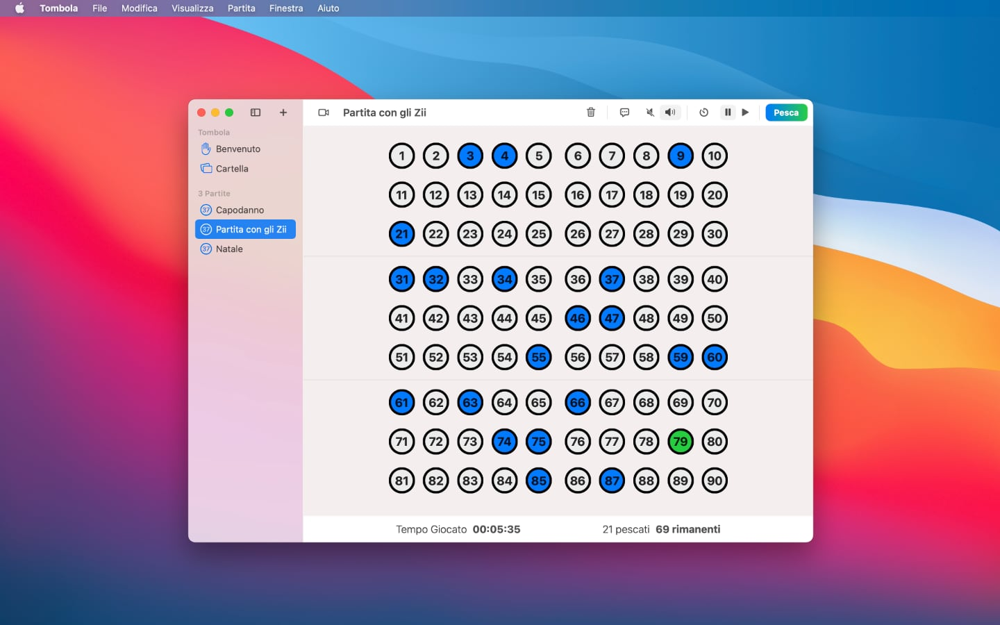
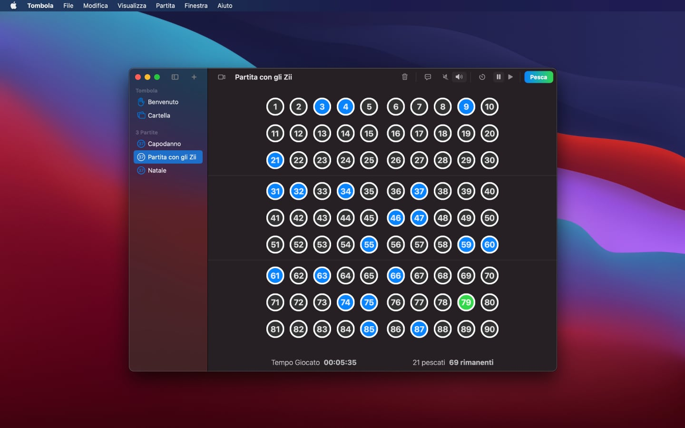

Prodotti 28/12/20
Aggiornamento 2.0 per Tombola
La versione 2.0 è ora disponibile con dozzine di nuove funzionalità e la compatibilità con gli ultimi sistemi operativi


Tombola 2.0 è una versione completamente rinnovata dell'applicazione, disponibile da oggi su App Store per iPadOS e macOS.
Ecco alcune novità:
- Piena compatibilità con iPadOS 14, macOS 11 Big Sur e i nuovi Mac con Apple Silicon
- Una nuova pagina di benvenuto, opzionalmente disattivabile, permette di vedere a colpo d'occhio le ultime tre partite giocate
- Si può giocare con una cartella direttamente nell'app, senza bisogno di andare sul web
- Per impostazione predefinita, insieme alle cartelle il link contiene una stanza di Skype Meet Now oppure opzionalmente su Jitsi Meet
- Arriva il supporto ad iCloud per conservare e sincronizzare le partite online con tutti i propri dispositivi
- La funzionalità di Text-To-Speech è più discreta, pronunciando solo il numero pescato, e si può anche disattivare
- Aggiunta localizzazione in lingua inglese
Come la versione precedente, Tombola 2.0 è completamente gratuita